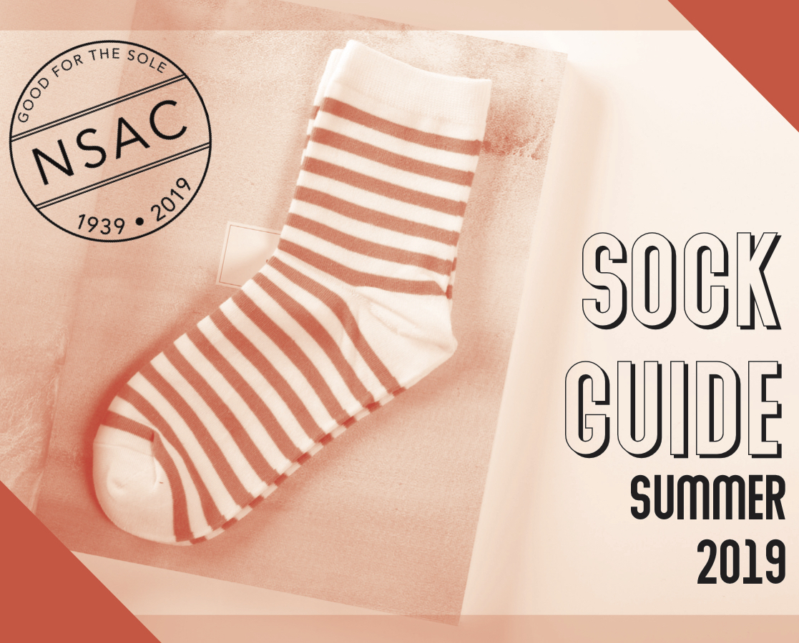

I'M AN
Aspiring Journalist & Designer
Hi, I'm Brynn! I'm a multi-talented designer based out of Des Moines, Iowa. Recently notable works include logo designs for Poiema Jewelry and the Substance Abuse Prevention Coalition of Buchanan County, as well as being the Arts and Entertainment editor for Viewfinder Magazine.
Contact Me


